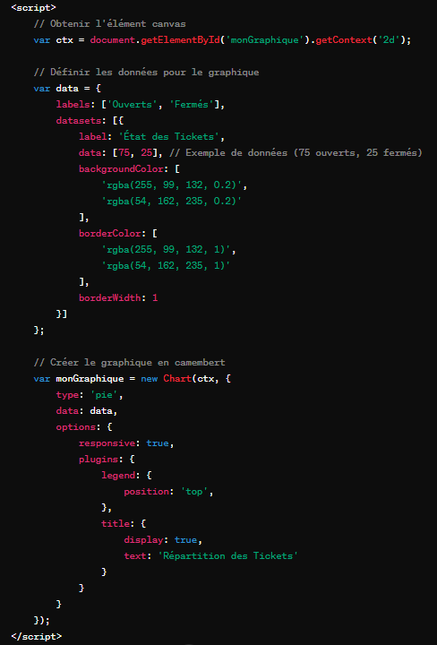
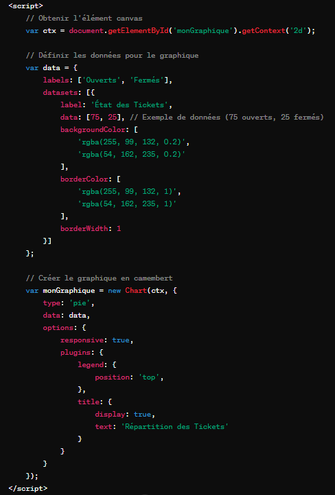

Javascript
JavaScript est un langage de programmation incontournable dans le monde du développement web. Né dans les années 1990, JavaScript a rapidement gagné en popularité pour devenir l'un des langages les plus utilisés dans la création d'applications web interactives et dynamiques. Son évolution constante et son adoption généralisée en font un outil indispensable pour les développeurs à travers le monde. L'écosystème JavaScript est vaste et dynamique, avec de nombreuses bibliothèques et frameworks tels que React, Angular et Vue.js, qui simplifient le développement d'interfaces utilisateur modernes et réactives.
Ces frameworks permettent aux développeurs de créer des applications web sophistiquées avec une efficacité accrue. L'importance de JavaScript dans le développement web professionnel est indéniable. Sa capacité à interagir avec le HTML et le CSS en fait le pilier fondamental de la programmation côté client. De plus, avec l'avènement des technologies comme Node.js, JavaScript est désormais utilisé côté serveur, ce qui lui confère une polyvalence remarquable pour le développement d'applications web à architecture complète.
Au cours de mes expériences professionnelles et de mes projets personnels, j'ai eu l'occasion d'utiliser JavaScript dans divers contextes, en complément d'autres langages tels que PHP pour des cas spécifiques. Lors du développement de l'application de gestion de ticket, j'ai exploré les fonctionnalités avancées de JavaScript pour intégrer des graphiques dynamiques à l'aide de Chart.js. Cela m'a permis de créer une interface utilisateur intuitive et réactive, offrant une visualisation claire des données de manière efficace. En outre, j'ai utilisé JavaScript conjointement avec PHP pour des tâches telles que la mise en place de filtres sur des tableaux de données, la validation de formulaires côté client, et la manipulation dynamique de contenu web. Cette combinaison de langages m'a permis de répondre efficacement aux besoins fonctionnels et techniques de mes projets, en exploitant les forces respectives de chaque langage.

Néanmoins, JavaScript n'est pas sans ses défis. La gestion asynchrone des opérations, les problèmes de compatibilité entre navigateurs et les pièges de la coercition de types peuvent rendre le développement JavaScript complexe et sujet à des erreurs. Pour surmonter ces défis, la manipulation du DOM et la gestion des événements en JavaScript sont essentielles. De même, la maîtrise des Promesses et des fonctions asynchrones est nécessaire pour gérer efficacement les opérations asynchrones et éviter les problèmes de callback hell. Les tests et le débogage sont cruciaux pour garantir la qualité du code JavaScript, tout comme la compréhension des bonnes pratiques de sécurité pour éviter les vulnérabilités. Enfin, l'optimisation des performances JavaScript est essentielle pour garantir une expérience utilisateur fluide, en utilisant des techniques telles que la minimisation du chargement des ressources et la gestion efficace de la mémoire.
Pour rester au fait des évolutions de la technologie JavaScript, j'ai adopté une approche de veille technologique régulière. Plutôt que de viser à devenir un expert, mon objectif est de me tenir informé des dernières tendances et des innovations dans le domaine du développement web. En restant informé de manière régulière, je suis en mesure d'intégrer progressivement les nouvelles connaissances et les meilleures pratiques dans mes projets, sans ressentir la pression de devenir un expert en JavaScript.
Ces frameworks permettent aux développeurs de créer des applications web sophistiquées avec une efficacité accrue. L'importance de JavaScript dans le développement web professionnel est indéniable. Sa capacité à interagir avec le HTML et le CSS en fait le pilier fondamental de la programmation côté client. De plus, avec l'avènement des technologies comme Node.js, JavaScript est désormais utilisé côté serveur, ce qui lui confère une polyvalence remarquable pour le développement d'applications web à architecture complète.
Au cours de mes expériences professionnelles et de mes projets personnels, j'ai eu l'occasion d'utiliser JavaScript dans divers contextes, en complément d'autres langages tels que PHP pour des cas spécifiques. Lors du développement de l'application de gestion de ticket, j'ai exploré les fonctionnalités avancées de JavaScript pour intégrer des graphiques dynamiques à l'aide de Chart.js. Cela m'a permis de créer une interface utilisateur intuitive et réactive, offrant une visualisation claire des données de manière efficace. En outre, j'ai utilisé JavaScript conjointement avec PHP pour des tâches telles que la mise en place de filtres sur des tableaux de données, la validation de formulaires côté client, et la manipulation dynamique de contenu web. Cette combinaison de langages m'a permis de répondre efficacement aux besoins fonctionnels et techniques de mes projets, en exploitant les forces respectives de chaque langage.

Néanmoins, JavaScript n'est pas sans ses défis. La gestion asynchrone des opérations, les problèmes de compatibilité entre navigateurs et les pièges de la coercition de types peuvent rendre le développement JavaScript complexe et sujet à des erreurs. Pour surmonter ces défis, la manipulation du DOM et la gestion des événements en JavaScript sont essentielles. De même, la maîtrise des Promesses et des fonctions asynchrones est nécessaire pour gérer efficacement les opérations asynchrones et éviter les problèmes de callback hell. Les tests et le débogage sont cruciaux pour garantir la qualité du code JavaScript, tout comme la compréhension des bonnes pratiques de sécurité pour éviter les vulnérabilités. Enfin, l'optimisation des performances JavaScript est essentielle pour garantir une expérience utilisateur fluide, en utilisant des techniques telles que la minimisation du chargement des ressources et la gestion efficace de la mémoire.
Pour rester au fait des évolutions de la technologie JavaScript, j'ai adopté une approche de veille technologique régulière. Plutôt que de viser à devenir un expert, mon objectif est de me tenir informé des dernières tendances et des innovations dans le domaine du développement web. En restant informé de manière régulière, je suis en mesure d'intégrer progressivement les nouvelles connaissances et les meilleures pratiques dans mes projets, sans ressentir la pression de devenir un expert en JavaScript.